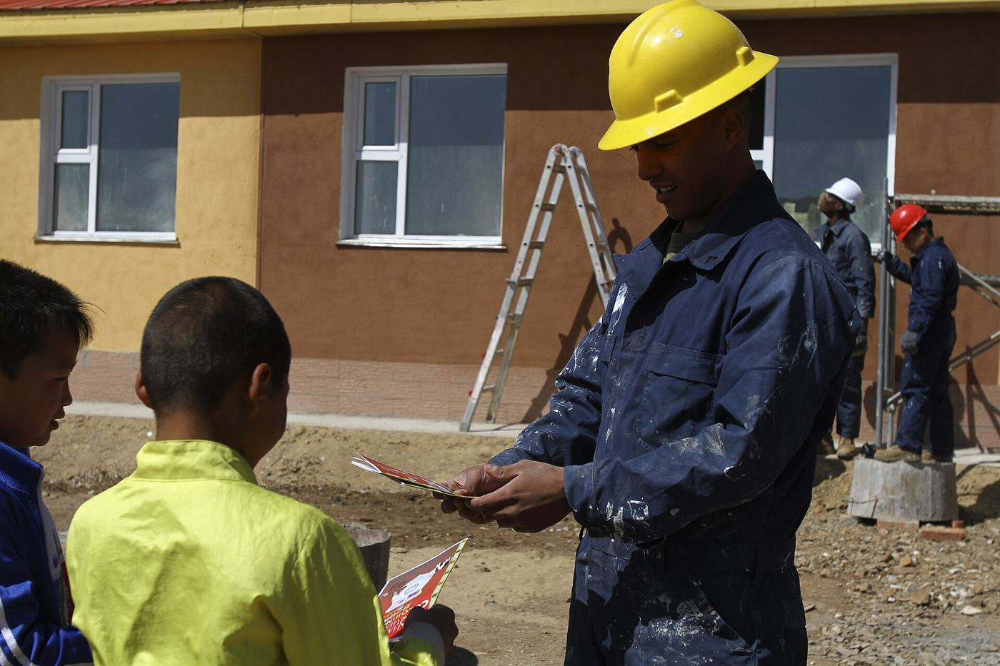
Хөдөлмөр эрхлэлт
Код 7820. Хөгжлийн бэрхшээлтэй иргэдийн хөдөлмөр эрхлэлтийг дэмжих үйл ажиллагаа.
2014 онд байгуулагдсан, улсын бүртгэлийн 8136629 дугаартай, ашгийн төлөө бус төрийн бус байгууллага. Хөдөлмөр эрхлэлт, нийгмийн оролцоо, мэдээлэл ба сургалт гэсэн гурван чиглэлээр ажилладаг.
Холбоо нь Төв аймгийн хөгжлийн бэрхшээлтэй иргэдийн дуу хоолойг орон нутгийн түвшинд хүргэж, тэдний эрх, оролцоо, боломжийн төлөө ажилладаг.
Бидний тухай Үйлчилгээ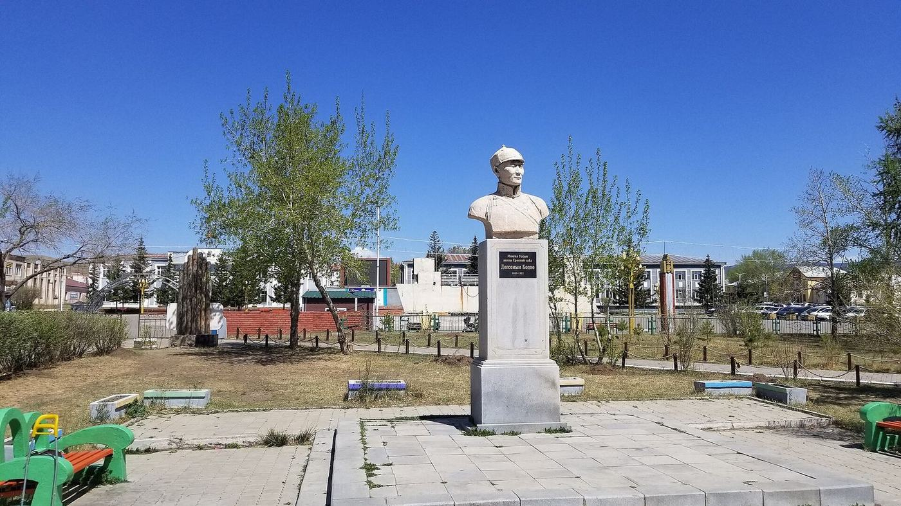
Холбооны үйл ажиллагаа нь улсын бүртгэлд гурван чиглэлээр бүртгэгдсэн. Гурвуулаа 2014 оны дөрөвдүгээр сарын 18-нд бүртгэгдсэн.

Код 7820. Хөгжлийн бэрхшээлтэй иргэдийн хөдөлмөр эрхлэлтийг дэмжих үйл ажиллагаа.
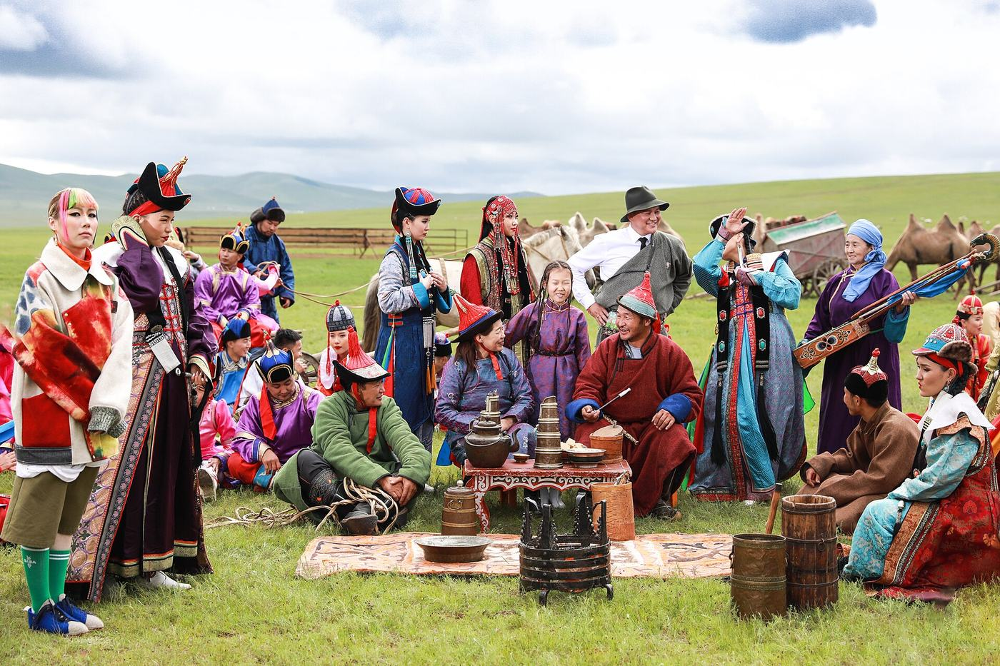
Код 8211. Хөгжлийн бэрхшээлтэй иргэдийг нийгмийн амьдралд оролцуулах үйл ажиллагаа.
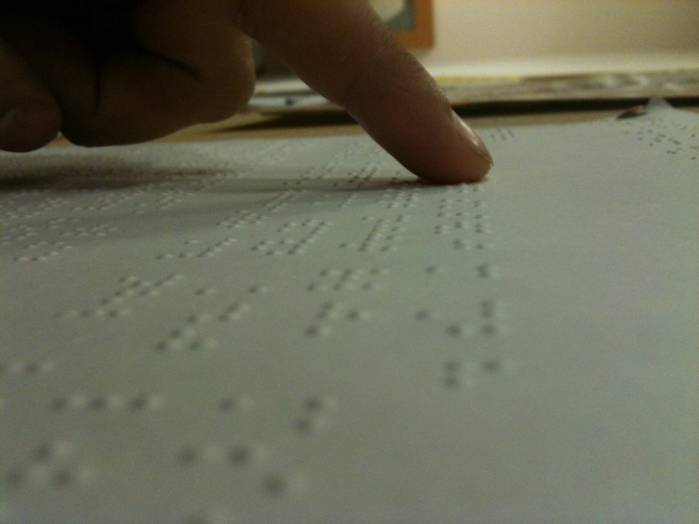
Код 9499. Мэдээлэл хүргэх, сургалт сурталчилгаа явуулах үйл ажиллагаа.
Орон нутгийн түвшинд хамгийн түгээмэл тулгардаг саад тотгорууд. Холбоо нь эдгээрийг бууруулах, шийдвэрлэхэд чиглэж ажилладаг.
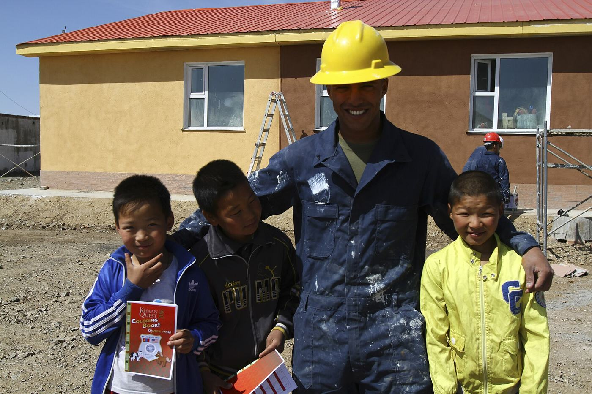
Ажил олдохгүй байх, орлогын дутагдал — хөгжлийн бэрхшээлтэй иргэдийн хамгийн түгээмэл асуудал.
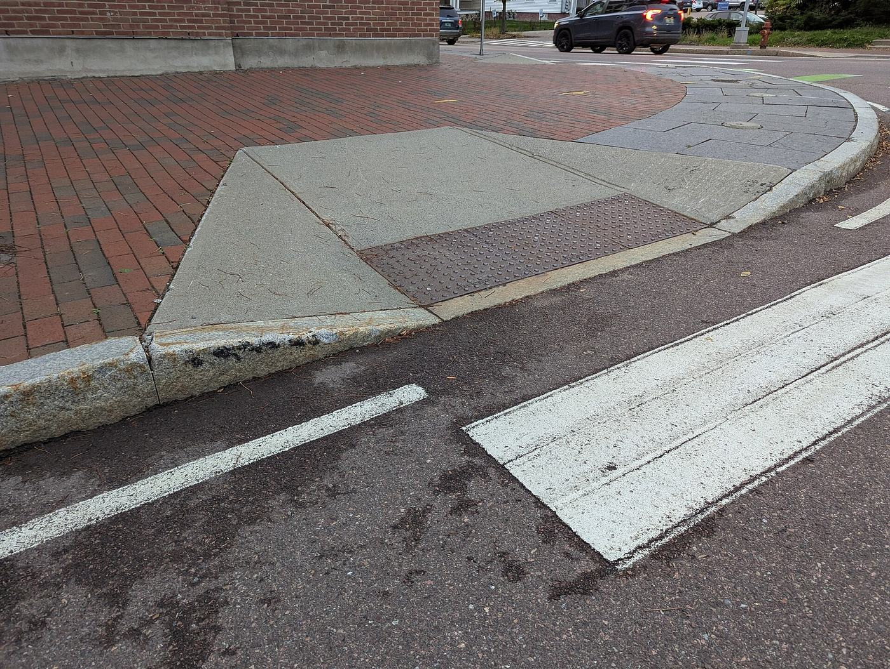
Барилга, зам, нийтийн үйлчилгээ, мэдээлэл хүн бүрт хүртээмжтэй байх ёстой.
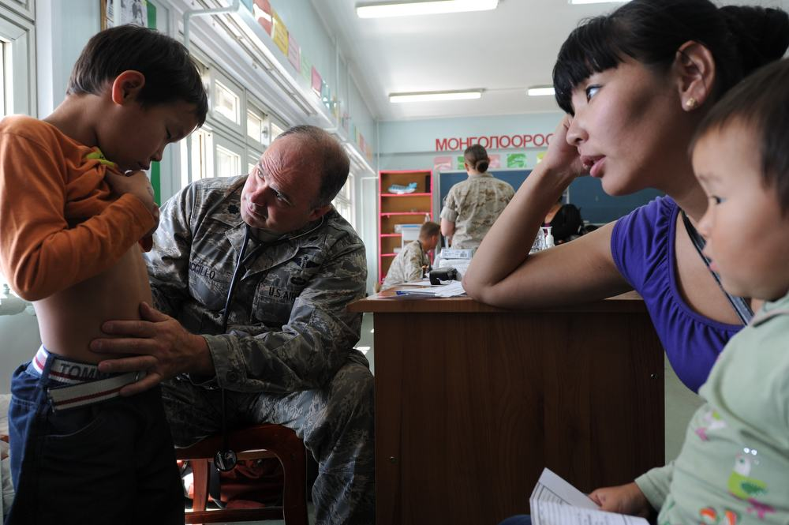
Нөхөн сэргээх эмчилгээ, туслах хэрэгсэл, эрүүл мэндийн үйлчилгээ орон нутагт хүрэлцэхгүй.
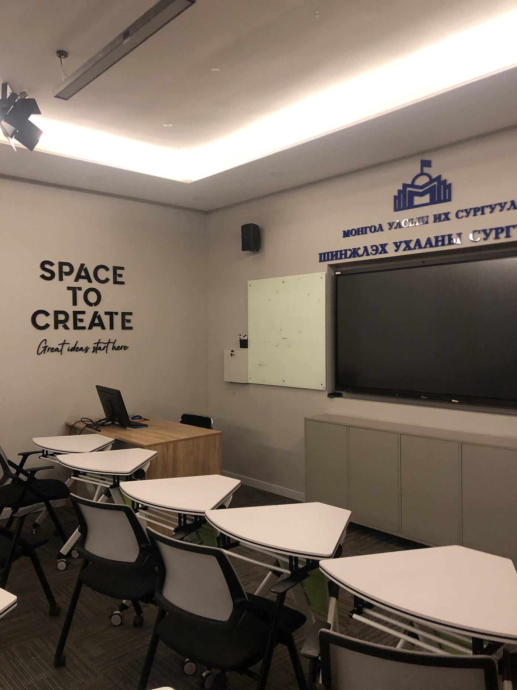
Сургууль, мэргэжлийн сургалтад тэгш хамрагдах боломж хязгаарлагдмал.
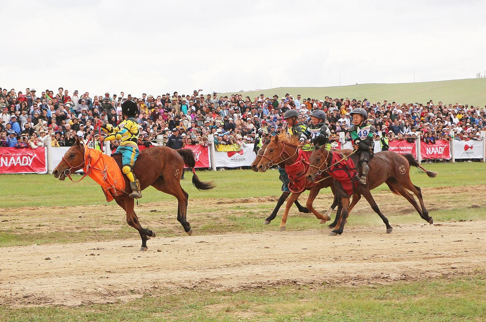
Соёл, спортын үйл ажиллагаанд оролцох боломж цөөн, орчин тохиромжгүй.
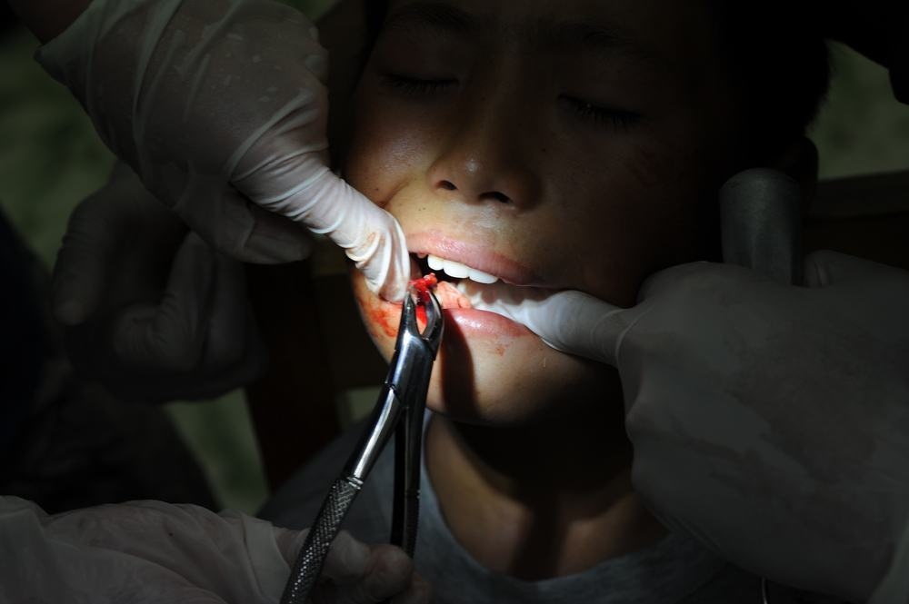
Асран хамгаалагч, гэр бүлийн ачаалал их; харилцан дэмжлэг, мэдээлэл хэрэгтэй.
Төв аймгийн хөгжлийн бэрхшээлтэй иргэдийн холбоо нь 2014 оны дөрөвдүгээр сарын 17-нд улсын бүртгэлд бүртгэгдэж, Төв аймгийн хөгжлийн бэрхшээлтэй иргэдийн дуу хоолойг орон нутгийн түвшинд хүргэх зорилгоор эхэлсэн.
Бид тэргүүлэх байгууллагын тусламжийг хүлээхгүй, харин гишүүдийнхээ оролцоонд тулгуурласан, орон нутгийн түвшинд ажилладаг байгууллага юм.
Дэлгэрэнгүй унших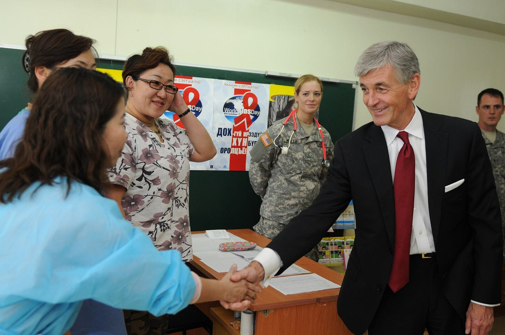
2023 оны 12 дугаар сарын 1. Зуунмод хотноо зохион байгуулагдсан уг чуулга уулзалтыг Төв аймгийн Засаг даргын тамгын газрын Нийгмийн бодлогын хэлтэс, аймгийн холбогдох байгууллагууд, Залуучуудын хөгжлийн төв, Дэлхийн зөн орон нутгийн хөтөлбөр болон манай холбоо хамтран зохион байгуулсан. 24 сумын 238 иргэн оролцсон.
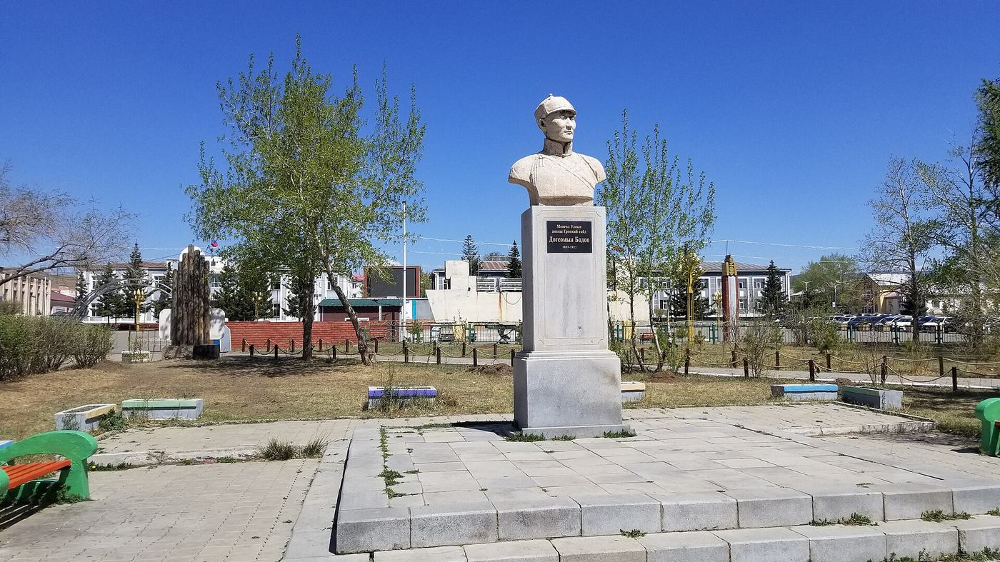
2023 оны 7 дугаар сарын 26. Аймаг байгуулагдсаны 100 жилийн ойг тохиолдуулан хөгжлийн бэрхшээлтэй иргэдэд зориулсан «Аз жаргалын өргөө» төв нээгдсэн. Уг төвийг Засаг даргын санаачилгаар «Холт интернэйшнл» олон улсын байгууллагатай хамтран тохижуулсан бөгөөд манай холбоо төвд үйл ажиллагааны байртай.
Сайн дураараа ажиллах. Сургалт зохион байгуулах, арга хэмжээнд туслах, мэргэжлийн зөвлөгөө өгөх зэрэг олон боломж бий.
Хамтран ажиллах. Ажлын байр санал болгох, сургалт хамтран зохион байгуулах, төсөл хэрэгжүүлэх саналтай бол холбогдоорой.
Хандивлах. Хандивын саналаа холбоо барих хэсгээр дамжуулан илгээнэ үү.
Холбоо барих